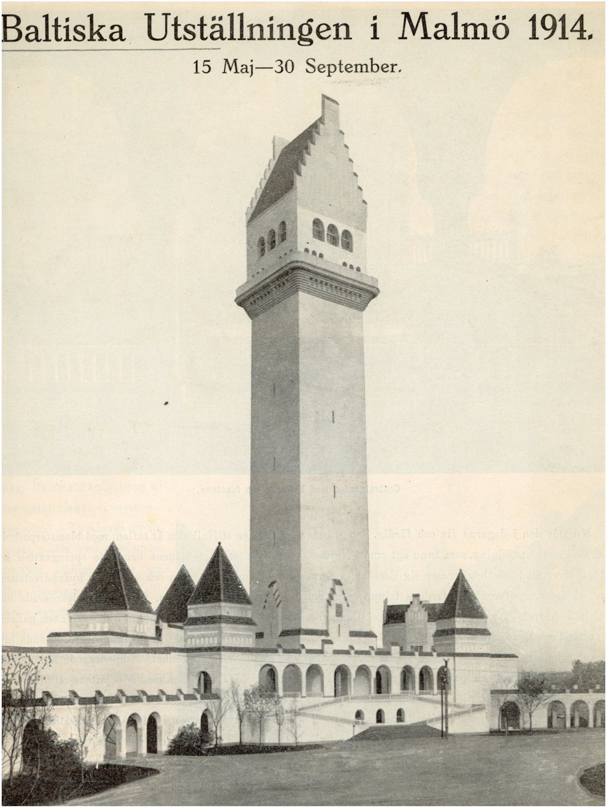
.jpg)
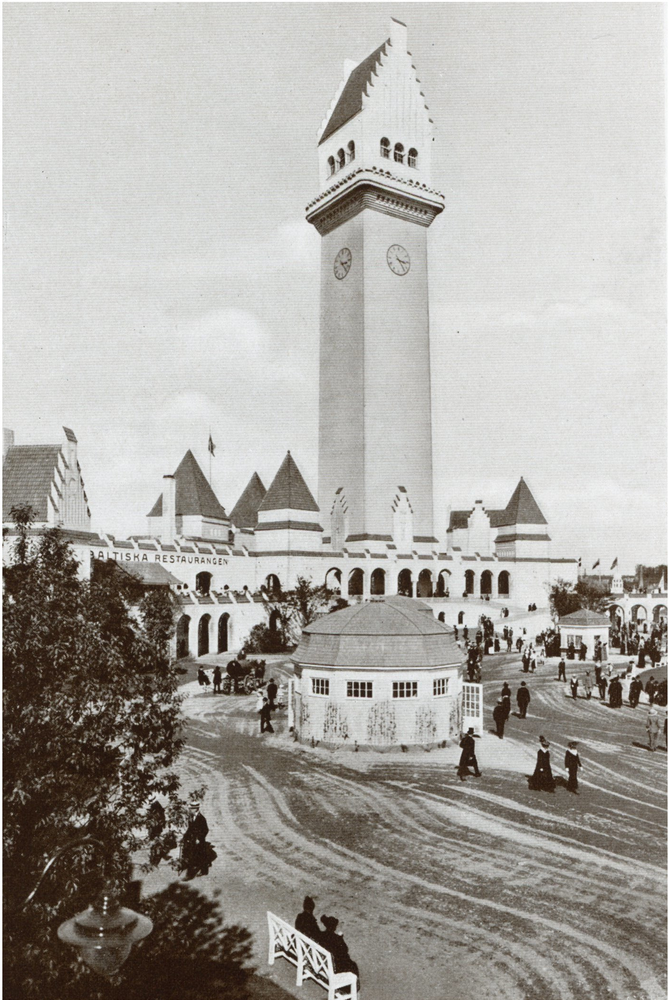
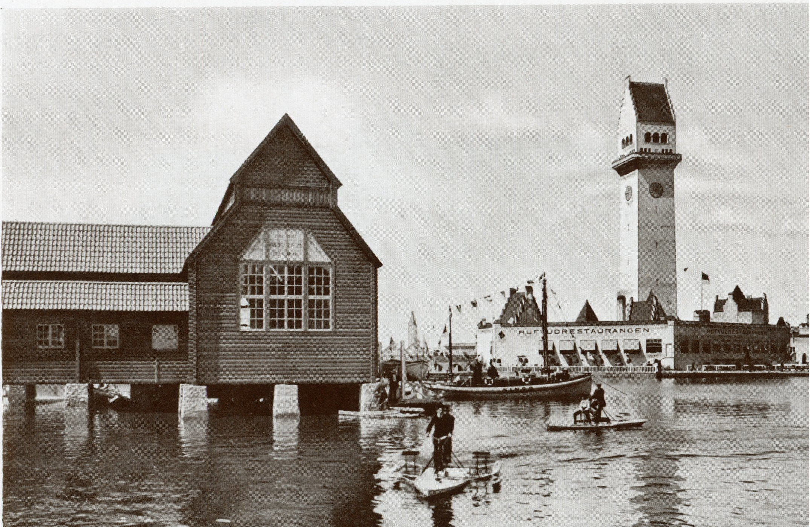
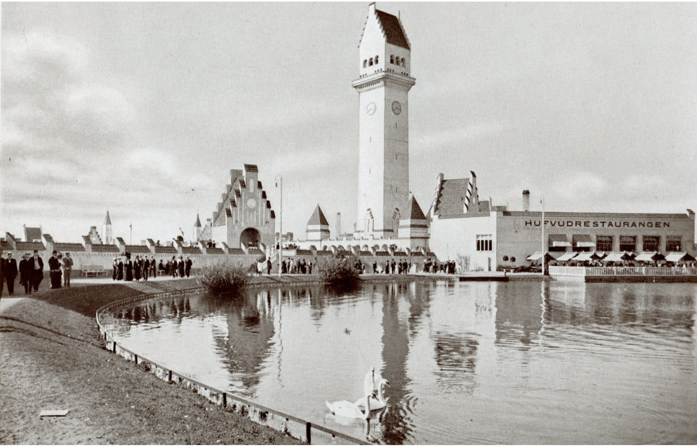
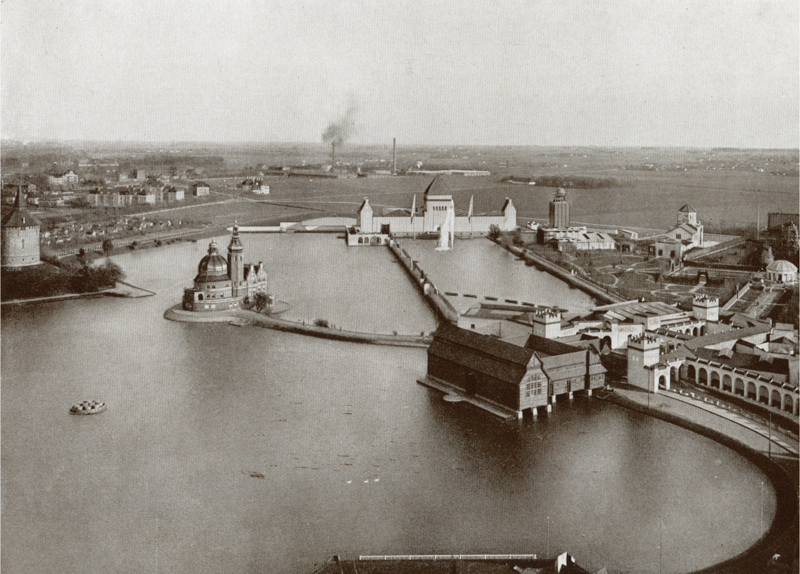
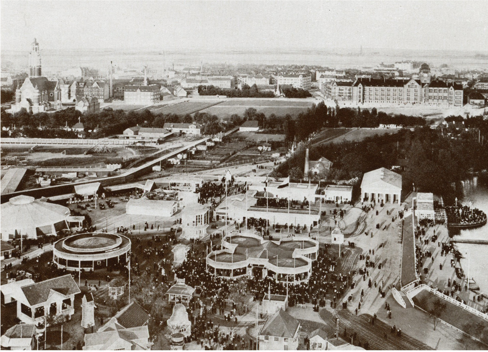
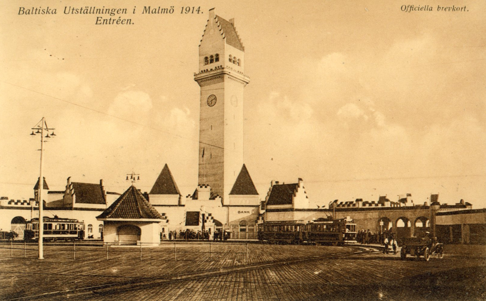
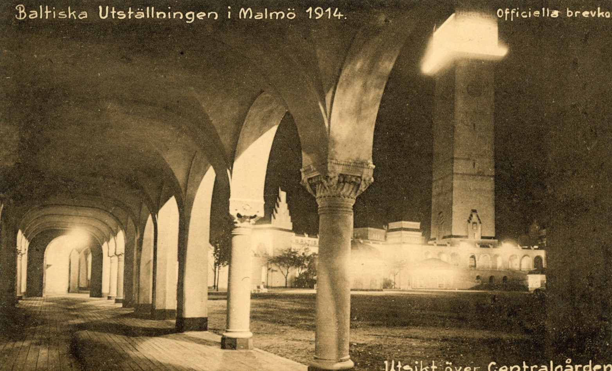
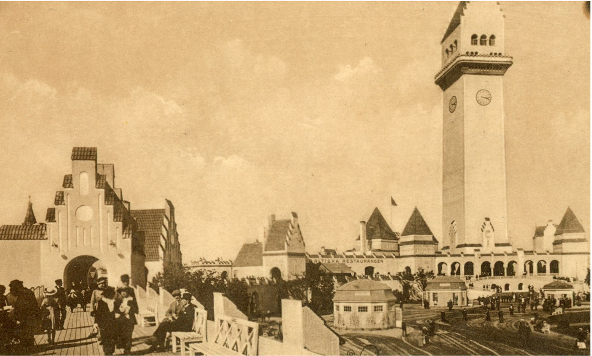
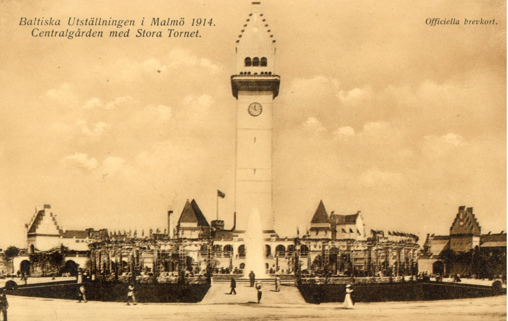
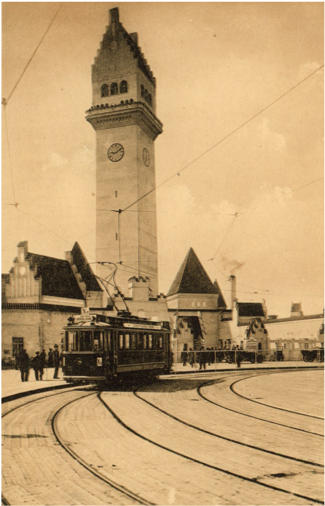
Click image to enlarge
The Baltic Tower
At 87 metres and 380 staircase steps, the Baltic Tower was Sweden’s defining contribution to the 1914 exhibition — and at the time of its construction, considered the tallest wooden tower in the world. It was designed by Ferdinand Boberg, the same architect responsible for the layout of the entire fairgrounds, and served as the visual centrepiece of the whole event.
Two electric elevators carried visitors to a height of 66 metres in just 44 seconds — a thrilling experience for an era in which such technology was still a marvel. From the observation platform, visitors could take in a sweeping panorama stretching across the Öresund strait to Copenhagen on clear days, and south across the flatlands of Skåne. Queues for the elevator were long throughout the summer.
The tower’s construction was itself a feat of engineering ambition. Built entirely from timber at a time when steel was becoming the dominant structural material, it represented a conscious choice to showcase Swedish craftsmanship and forestry tradition. The ornamental details drew on the late Jugend vocabulary — geometrically restrained compared to the organic curves of earlier Jugendstil, but still rich in decorative intention.
On 30 September 1914, just days before the exhibition closed, a powerful storm struck Malmö. Tiles were ripped loose and several trusses displaced, but the tower held. It was a final dramatic moment for a structure that had already weathered the summer — and the outbreak of a world war that gradually drew away visitors and dampened the festive atmosphere.
After the exhibition closed on 4 October 1914, the tower was dismantled along with all the other national pavilions. Nothing of it remains in situ. What survives are the photographs and printed catalogs held at Malmö City Library — the same materials digitized for this project.
Swedish Late Jugend
The Jugend style arrived in Sweden partly through its Nordic variant, initially shaped by the organic naturalism of the Belgian and French movements. Swedish architects moved relatively quickly toward a more restrained, geometric interpretation — what later historians have termed late Jugend. This tendency suited a cultural climate that valued craftsmanship and material honesty alongside decorative ambition. The Baltic Tower exemplified this: its ornamental vocabulary was controlled rather than exuberant, favouring angular motifs over the flowing botanical curves of earlier Jugendstil.
The Exhibition's Architect
Ferdinand Boberg (1860–1946) was among the most prominent Swedish architects of his generation, known for bridging National Romanticism and the decorative modernism of Jugend. He had previously designed the Stockholm Post Office (1903), the Rosenbad government building, and the General Art and Industrial Exhibition of 1897. His appointment as chief architect of the Baltic Exhibition — responsible for both the master plan of the fairgrounds and the design of the tower — reflected his standing as Sweden's foremost exhibition architect. The tower was conceived to be imposing at great distance and refined at close inspection.
A Wooden Tower in the Age of Steel
The choice to build the Baltic Tower in timber was both practical and symbolic. Sweden's forestry and carpentry traditions were among the country's defining craft identities, and constructing the tallest exhibition tower of its kind in wood was a deliberate assertion of those capabilities. The engineering challenge was considerable: the structure required careful jointing and bracing to withstand wind loads at 87 metres. When a storm struck Malmö on 30 September 1914, the tower sustained minor damage but held — a vindication of the structural approach, and the tower's final dramatic moment before dismantling.